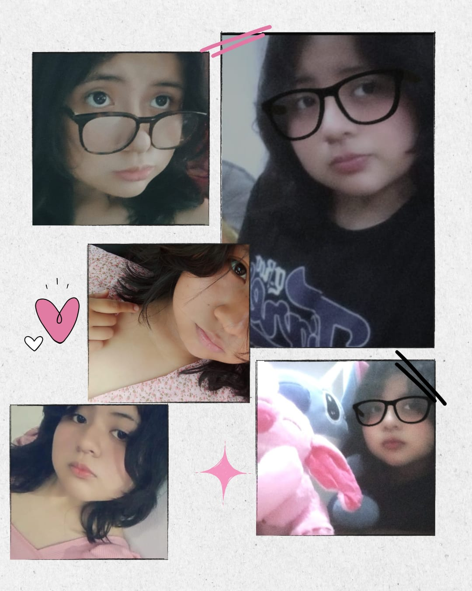

Quiero decirte que...
Eres lo mejor que me ha pasado en tantos años, simplemente eres todo lo que amo, me haces sentir tan feliz todo el tiempo, y aunque a veces no soy capaz de decirte, darte y trasmitirte todo lo que que me haces sentir, lo alegre que soy cuando estas conmigo.
Mayormente me cuesta pensar en formas de devolverte todo lo que me das, no matrial o fisico, sino, a lo sentimental.
Estoy muy seguro que preferiria mil veces pasar mi eternidad contigo que con otra persona, prefiero estar enamorado de ti, antes de voltear a ver a otra persona. Eres el amor de mi vida y siempre lo seras, porque no hay mujer que pueda llamar tanto mi atencion como tu, porquede verdad te amo.
Simolemente erees hermosa, lo mas hermoso del unuiverso, eres lo mas perfecto que existe, no quiero que te vayas nunca y que tu amor, tu cara, tu voz, tu cuerpo y tu presencia sean eternos...
Cosas que me hacen sentir algo por ti
- Me encanta cómo te ríes, porque tu risa tiene algo que me alivia incluso en los días pesados.
- Cuando te concentras en algo, te miro sin que te des cuenta. No sé por qué, pero me da paz.
- Contigo me siento cómodo siendo yo, sin filtros ni máscaras.
- A veces solo quiero escucharte hablar, aunque no digas nada. Tu voz me calma.
- Me haces sentir visto de una forma que no mucha gente logra.
- No intentas parecer perfecta, y eso me hace admirarte más.
- Me gusta cómo hablas de lo que amas, porque ahí estás tú, de verdad.
- Cuando me miras, siento que estás viendo algo más de lo que digo.
- Puedo estar en silencio a tu lado sin sentir la necesidad de llenar el espacio.
- Me haces reír de verdad, y eso no es tan fácil como parece.
- Pienso en ti sin planearlo. A veces solo estás ahí, apareces en medio del día.
- Me haces querer contar cosas que normalmente me guardo.
- Tu forma de estar en el mundo me inspira.
- Me sorprende lo fácil que es hablar contigo.
- Contigo, hasta los momentos simples tienen algo especial.
- No sé si puedo explicarlo todo, pero sé que algo se mueve en mí cuando estoy contigo.
No tengo que explicarlo todo
A veces una imagen dice poco. A veces un montón de ellas tampoco alcanzan. Pero igual las guardo, porque en cada una estás tú, y eso ya es suficiente para mí.
